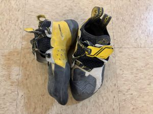
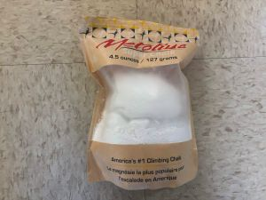
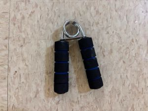
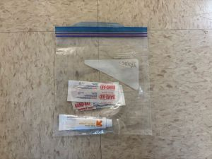
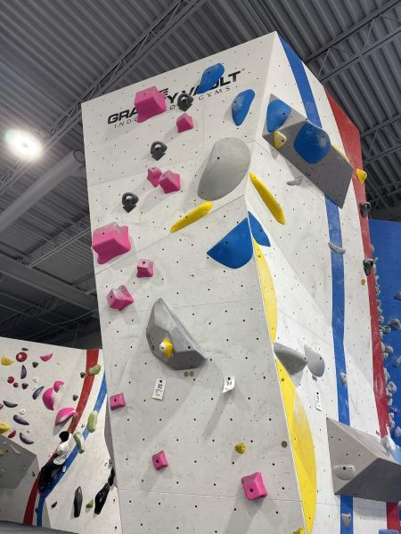
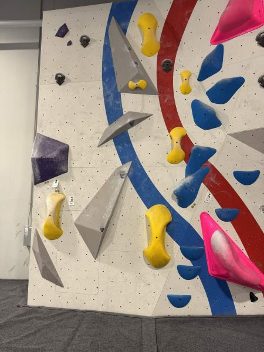

Introduction
Take a quick look into my climbing routine, including what I bring with me and what I've been able to accomplish on the wall! It's split into two sections: Chalk Bag Essentials and Recent Routes.
First, I'll focus on some of the small things that make a big difference during a session. Shoes, chalk, and other basics might not seem that important at first, but they can have a big impact on how comfortable and consistent you feel while climbing. This part of the page is meant to give a realistic look at what climbers actually carry, especially for beginners who might not know what they need yet. By no means are these requirements for everyone, but these are definitely what helps me make it through my climbing sessions.
Next is all about progress. These are all about the climbs I'm doing throughout a session, whether that's a flash or a project I spend multiple weeks on. They'll all have different challenges, whether it's balance, strength, or just figuring out a tricky sequence. It's not just about showing off sends, but more about tracking improvement and seeing how far I've come!
Back to top
Chalk Bag Essentials
These are some of the things I keep in my chalk bag and bring with me during climbing sessions. A few of them, like my shoes and chalk, get used every single time I climb, while others are just nice to have around for comfort, recovery, or safety both on and off the wall. By no means do you need all of this gear to start climbing, but these are the items that have slowly become part of my personal routine over time. One of the things I quickly learned about climbing is that everyone develops their own habits and preferences. Some climbers like to keep things minimal and only bring the essentials, while others carry around extra tape, brushes, skincare products, snacks, recovery tools, or even different pairs of shoes depending on the type of climb they’re working on (and I'm definitely the latter).
La Sportiva Climbing Shoes

My go-to pair for the rocks.
Climb X Shoes

My softer pair for easier climbs.
Ankle Socks

To protect my Achilles
EVMT Chalk

My basically empty bag of chalk.
Chalk Ball

Goes inside of the chalk bag.
Metolius Chalk

Backup if I run out.
Grip Strengthener

To warm up the fingers.
Knee Brace

To protect my breaking knees.
Mini First Aid Kit

To patch and scratches or cuts.
For me, having my own gear makes the experience feel more comfortable and consistent. My climbing shoes are probably the most important piece of equipment I own because they make such a huge difference in grip and confidence on the wall compared to rental shoes. Chalk is another must-have, especially during longer sessions when sweaty hands start becoming a problem. I also like carrying things like finger tape, bandaids, ointment or lotion, and small first-aid items because climbing can be surprisingly rough on your skin and hands. Over time, packing my climbing bag has become part of the routine itself, almost like a pre-game ritual before heading to the gym. For newer climbers though, it’s important to know that you really don’t need to spend a ton of money right away. Most gyms rent out the basics, and it’s completely okay to start simple while you figure out what works best for you. If you want a better idea of what beginner climbing gear looks like, here’s a good article with more information!
Back to top
Recent Climbs
Here, I'll be keeping track of my recent climbs. Each entry, whether it's a flash, hard-earned send, or a project I've worked on for weeks, is an inportant step toward progress. They all come with different challenges: balance, strength, and thoughtfulness on the wall.
This section isn't about perfection, but moreso about the process behind climbing. It's a way for us to look back and see how problem solving, technique, and endurance improve over time. Even the climbs that don't go as planned still matter, since they highlight what to work on next!
| Route |
Difficulty |
Status |
Enjoyment |
Description |
 |
Pink V2 |
Flashed |
3.5/5 |
This was a softer V2 that I hit at the beginning of one of my sessions. There was a two-hand start on the gray volume that required you to position your body to the left, and then square out for the rest of the climb. The only thing about these holds is that sometimes they're a bit difficult to get your hand around, especially on the larger ones, requiring more friction on the fingers. |
 |
Yellow V3 |
Topped on 3rd Attempt |
4/5 |
There were not many footholds for this one, so I had a bit of a hard time starting it on the incline. But once you make it past that part, the rest of it isnt too bad. I don't usually like slopers, but these had a bit of a give to them which made them easier to grip. |
 |
Yellow V3 |
DNF |
2/5 |
I initially avoided this climb because I am not a big fan of pinchers, but for the sake of this website, I wanted to try it anyways. All it did was confirm that I don't have enough grip strength to enjoy pincher climbs. I always have a harder time positioning and trusting my feet on these. |
Things To Focus On
For next week, my goal is to get onto the Sloper V3 earlier in the session (probably first), so then I can continue to work on the project with hopefully more strength than last week. As always, I struggle with dynos, so continuing to work on those would be a big plus. Lastly, though my finger strength feels pretty solid, my forearms felt weak early into the session, so I want to practice relying more on my lower body throughout climbgs.
Back to top